Foro de laComunidadInformática
Conectados para generar impacto28 NOV 2026 · CERO + INFINITO · FCEyN, UBA
Cero +Infinito
FCEyN, UBA · Ciudad UniversitariaAv. Intendente Güiraldes 2160, CABA17:00 · PANEL DE CIERRE EN EL HALL CENTRALSÁB 28 NOV 202628 NOV 2026 · CERO + INFINITO · FCEyN, UBAAsí transcurreel día
28 NOV 2026 · CERO + INFINITO · FCEyN, UBAAcreditacióny café
A las 10:00 empiezan las charlas y talleres de las comunidades.
28 NOV 2026 · CERO + INFINITO · FCEyN, UBACharlasy talleres
Las comunidades cuentan su trabajo, en paralelo. Elegí a qué actividad asistir.
28 NOV 2026 · CERO + INFINITO · FCEyN, UBAAlmuerzo
Volvemos a las 14:00 con los conversatorios.
28 NOV 2026 · CERO + INFINITO · FCEyN, UBAConversatorios
Referentes del sector debaten los seis ejes de la agenda.
28 NOV 2026 · CERO + INFINITO · FCEyN, UBACafé
A las 17:00, panel de cierre en el hall central.
28 NOV 2026 · CERO + INFINITO · FCEyN, UBAPanelde cierre
Una agenda común para el desarrollo tecnológico nacional.
28 NOV 2026 · CERO + INFINITO · FCEyN, UBACuidemoseste lugar
Hoy la Facultad nos abre sus puertas.
28 NOV 2026 · CERO + INFINITO · FCEyN, UBASacá fotos,subilas ymencionanos
En Instagram, en tus historias y publicaciones.
28 NOV 2026 · CERO + INFINITO · FCEyN, UBALo últimoen nuestrasredes
28 NOV 2026 · CERO + INFINITO · FCEyN, UBAAsí sevive elForo
@informaticos.ar@informaticos.ar@informaticos.ar28 NOV 2026 · CERO + INFINITO · FCEyN, UBA28 NOV 2026 · CERO + INFINITO · FCEyN, UBA28 NOV 2026 · CERO + INFINITO · FCEyN, UBA28 NOV 2026 · CERO + INFINITO · FCEyN, UBA28 NOV 2026 · CERO + INFINITO · FCEyN, UBA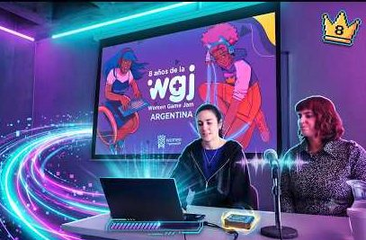
Desarrollo de videojuegos: ¿Qué perfiles busca hoy la industria del gaming?
 WIGAr28 NOV 2026 · CERO + INFINITO · FCEyN, UBA
WIGAr28 NOV 2026 · CERO + INFINITO · FCEyN, UBA
Reconstruyendo la memoria colectiva mediante ciencia de datos
Zona 428 NOV 2026 · CERO + INFINITO · FCEyN, UBA
Inteligencia Artificial, Ciberseguridad, Tecnología Nuclear y Espacial como ejes de desarrollo y soberanía para una Argentina Potencia
 Renacer28 NOV 2026 · CERO + INFINITO · FCEyN, UBA
Renacer28 NOV 2026 · CERO + INFINITO · FCEyN, UBA
La belleza de lo roto
28 NOV 2026 · CERO + INFINITO · FCEyN, UBAColonialismo digital: dependencia tecnológica y control democrático
 ODIA28 NOV 2026 · CERO + INFINITO · FCEyN, UBA
ODIA28 NOV 2026 · CERO + INFINITO · FCEyN, UBA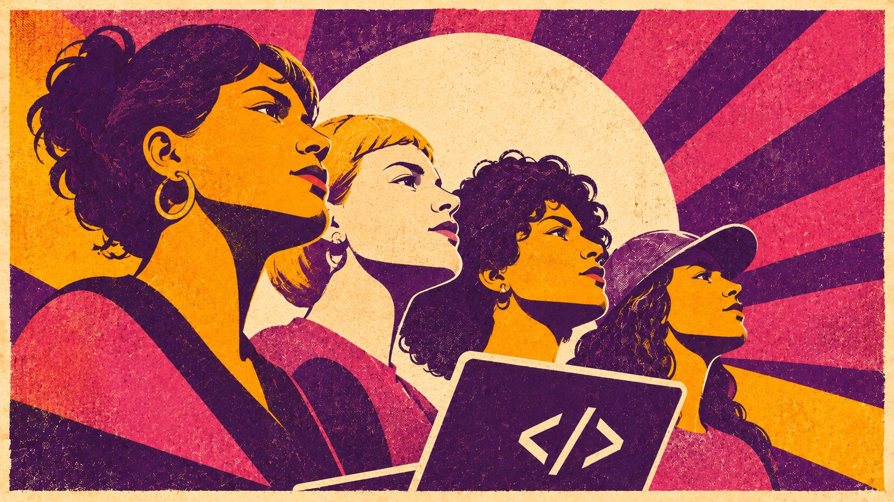
¿Quiénes construimos el futuro informático? Trabajo, tecnología y derechos desde los feminismos y las diversidades
28 NOV 2026 · CERO + INFINITO · FCEyN, UBA
Molestando al poder de a una dataviz por vez
28 NOV 2026 · CERO + INFINITO · FCEyN, UBA
Hackeando la mente del atacante: tecnologías de engaño y respuesta en tiempo real
28 NOV 2026 · CERO + INFINITO · FCEyN, UBA
Un Palantir para gobernarlos a todos
28 NOV 2026 · CERO + INFINITO · FCEyN, UBALos NAP de Informática: una definición impostergable para la educación argentina
28 NOV 2026 · CERO + INFINITO · FCEyN, UBA
La guerra security vs. safety y los riesgos del campo de la información
28 NOV 2026 · CERO + INFINITO · FCEyN, UBAMuy lindo el dashboard… ¿y ahora qué hago con esto? Del producto tecnológico a la solución de un problema
 NIS28 NOV 2026 · CERO + INFINITO · FCEyN, UBA
NIS28 NOV 2026 · CERO + INFINITO · FCEyN, UBA
Ciberseguridad en municipios
28 NOV 2026 · CERO + INFINITO · FCEyN, UBA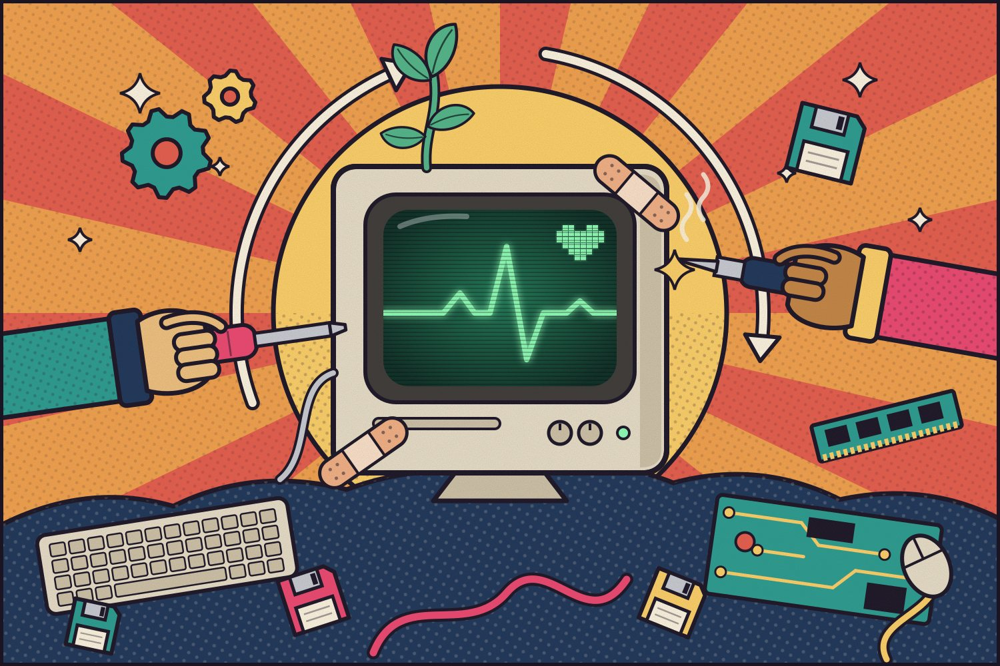
¿Qué es Cybercirujas? Combatiendo la obsolescencia programada desde la autogestión
 Cyber Cirujas28 NOV 2026 · CERO + INFINITO · FCEyN, UBA
Cyber Cirujas28 NOV 2026 · CERO + INFINITO · FCEyN, UBAHackear, publicar, desobedecer
Coti / Cyber Cirujas28 NOV 2026 · CERO + INFINITO · FCEyN, UBA
Foro 2026 de la Asociación de Docentes de Informática y Computación de la República Argentina
28 NOV 2026 · CERO + INFINITO · FCEyN, UBA28 NOV 2026 · CERO + INFINITO · FCEyN, UBASeis ejes de debate
28 NOV 2026 · CERO + INFINITO · FCEyN, UBA¿Qué políticas necesitamos para que la informática genere más desarrollo y mejor empleo?
28 NOV 2026 · CERO + INFINITO · FCEyN, UBA¿La inteligencia artificial viene a reemplazar trabajadores y aumentar la productividad?
28 NOV 2026 · CERO + INFINITO · FCEyN, UBA¿Qué capacidades tecnológicas necesita la Argentina para decidir su propio futuro?
28 NOV 2026 · CERO + INFINITO · FCEyN, UBA¿Cómo protegemos nuestras infraestructuras críticas con capacidades propias?
28 NOV 2026 · CERO + INFINITO · FCEyN, UBA¿Cómo trazamos carreras sostenibles en una industria que cambia todo el tiempo?
28 NOV 2026 · CERO + INFINITO · FCEyN, UBA¿Cómo cuidamos los derechos de las personas sin frenar el desarrollo tecnológico?
28 NOV 2026 · CERO + INFINITO · FCEyN, UBAIndustria IT y desarrollo productivo


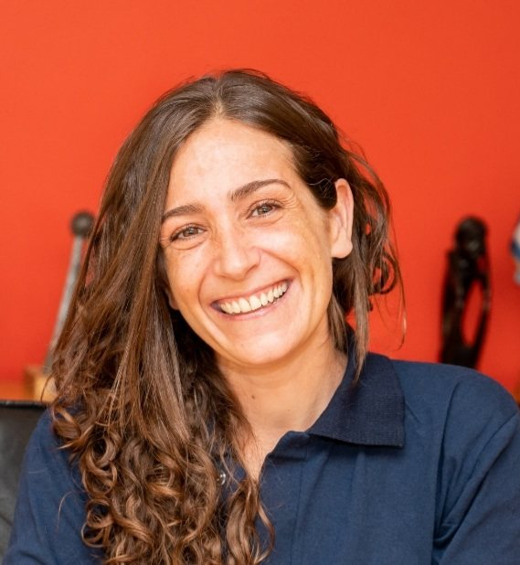
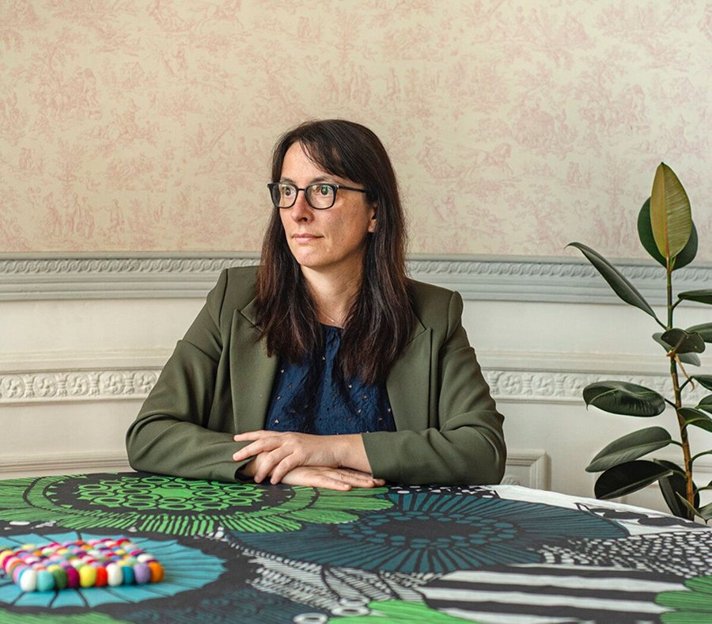
28 NOV 2026 · CERO + INFINITO · FCEyN, UBATrabajo informático en tiempos de inteligencia artificial


 28 NOV 2026 · CERO + INFINITO · FCEyN, UBA
28 NOV 2026 · CERO + INFINITO · FCEyN, UBASoberanía tecnológica y desarrollo nacional


 28 NOV 2026 · CERO + INFINITO · FCEyN, UBA
28 NOV 2026 · CERO + INFINITO · FCEyN, UBACiberseguridad y ciberdefensa: proteger nuestras capacidades estratégicas

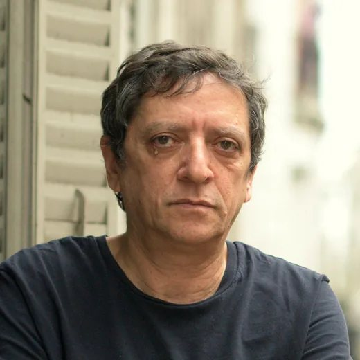

 28 NOV 2026 · CERO + INFINITO · FCEyN, UBA
28 NOV 2026 · CERO + INFINITO · FCEyN, UBAEducación y formación para el desarrollo de nuevos perfiles profesionales


 28 NOV 2026 · CERO + INFINITO · FCEyN, UBA
28 NOV 2026 · CERO + INFINITO · FCEyN, UBADatos personales: derechos, privacidad y responsabilidad


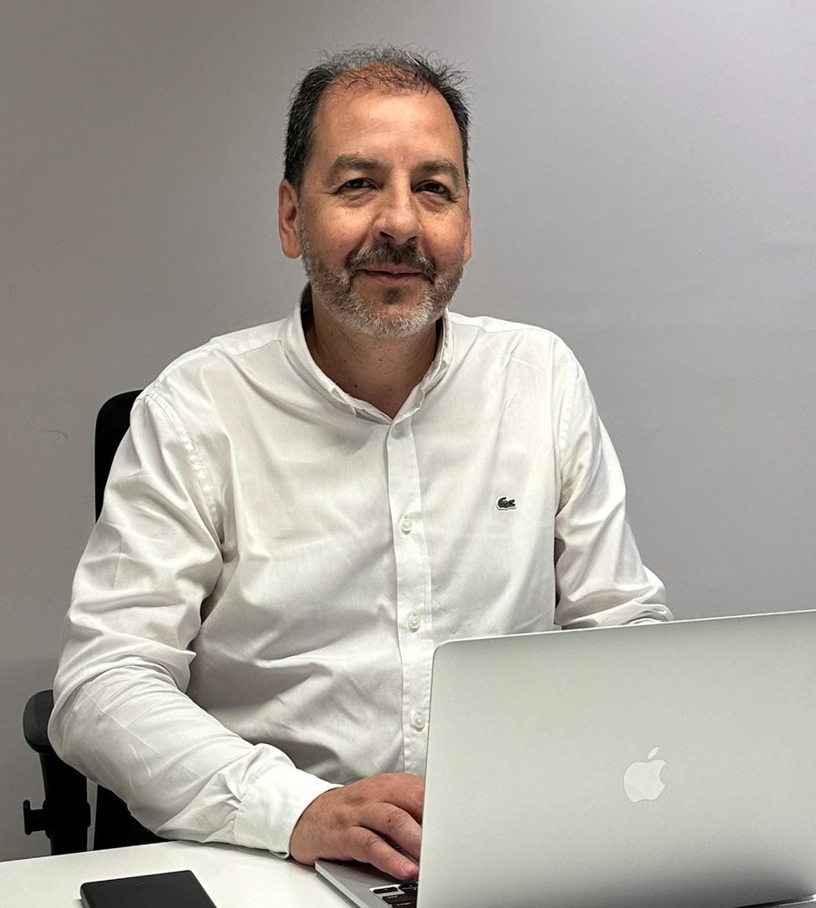
28 NOV 2026 · CERO + INFINITO · FCEyN, UBA28 NOV 2026 · CERO + INFINITO · FCEyN, UBA28 NOV 2026 · CERO + INFINITO · FCEyN, UBAComunidades técnicas y de práctica


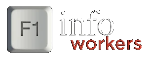
28 NOV 2026 · CERO + INFINITO · FCEyN, UBADerechos digitales, género y sociedad


 28 NOV 2026 · CERO + INFINITO · FCEyN, UBA
28 NOV 2026 · CERO + INFINITO · FCEyN, UBAInvestigación e innovación


 28 NOV 2026 · CERO + INFINITO · FCEyN, UBA
28 NOV 2026 · CERO + INFINITO · FCEyN, UBATrabajo, cooperativas y profesión


 28 NOV 2026 · CERO + INFINITO · FCEyN, UBA
28 NOV 2026 · CERO + INFINITO · FCEyN, UBACentros de estudiantes y agrupaciones
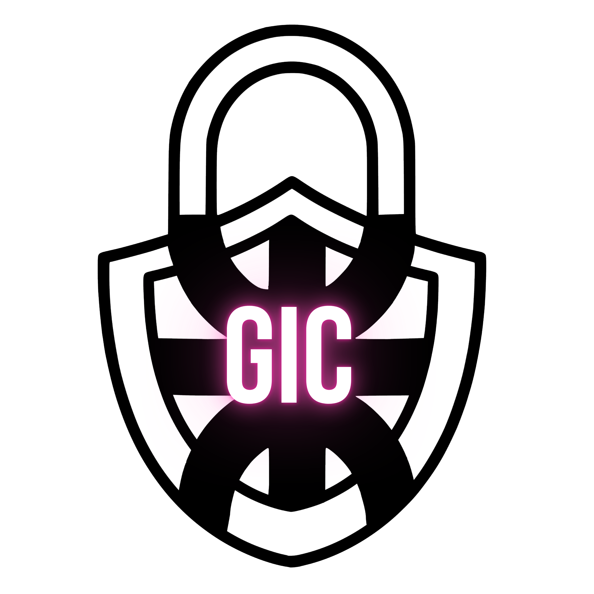
28 NOV 2026 · CERO + INFINITO · FCEyN, UBAGracias a las comunidades que hacen el Foro




Somos comunidad
Yo estuveen el Foro
COMUNIDAD INFORMÁTICA · 2026@informaticos.arEl compromisode nuestrotrabajo
Trabajadores
Informáticos
28 NOV 2026 · CERO + INFINITO · FCEyN, UBAResumen2019–2023AGC Argentina
Trabajadores
Informáticos
28 NOV 2026 · CERO + INFINITO · FCEyN, UBAFestejo denuestros30 años
Trabajadores
Informáticos
28 NOV 2026 · CERO + INFINITO · FCEyN, UBAPlenarioFederalAGC
Trabajadores
Informáticos
28 NOV 2026 · CERO + INFINITO · FCEyN, UBASomostrabajadoresinformáticos
Trabajadores
Informáticos
28 NOV 2026 · CERO + INFINITO · FCEyN, UBASumate al Forode la ComunidadInformática
foco.informaticos.ar 28 NOV 2026 · CERO + INFINITO · FCEyN, UBA
28 NOV 2026 · CERO + INFINITO · FCEyN, UBA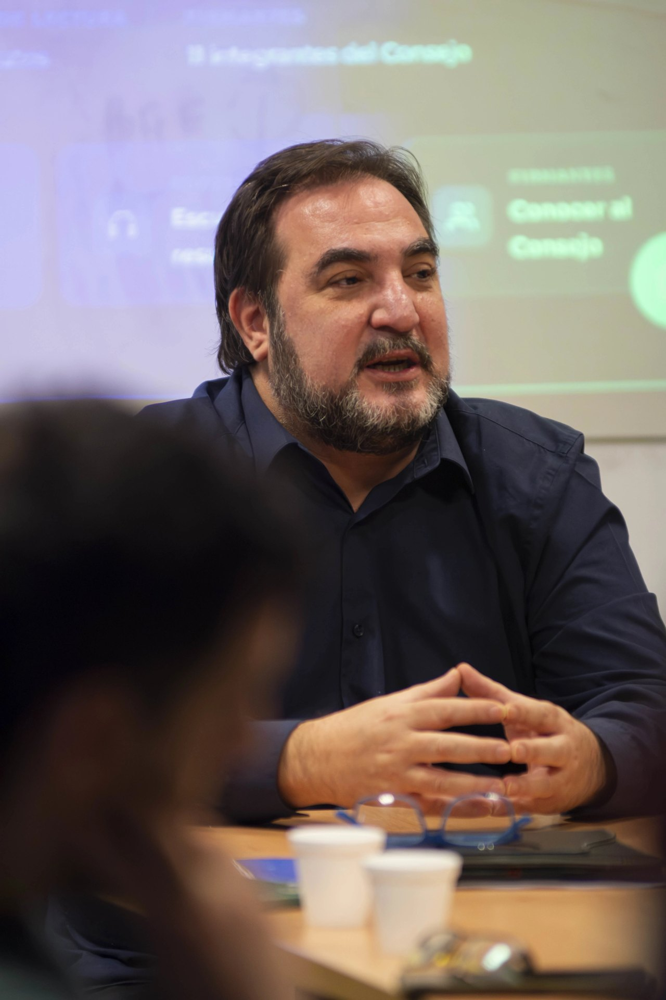
El futuro del sector informático lo construimos entre todos. El sindicalismo tiene la responsabilidad de generar los espacios de encuentro, participación y construcción colectiva que lo hagan posible.”
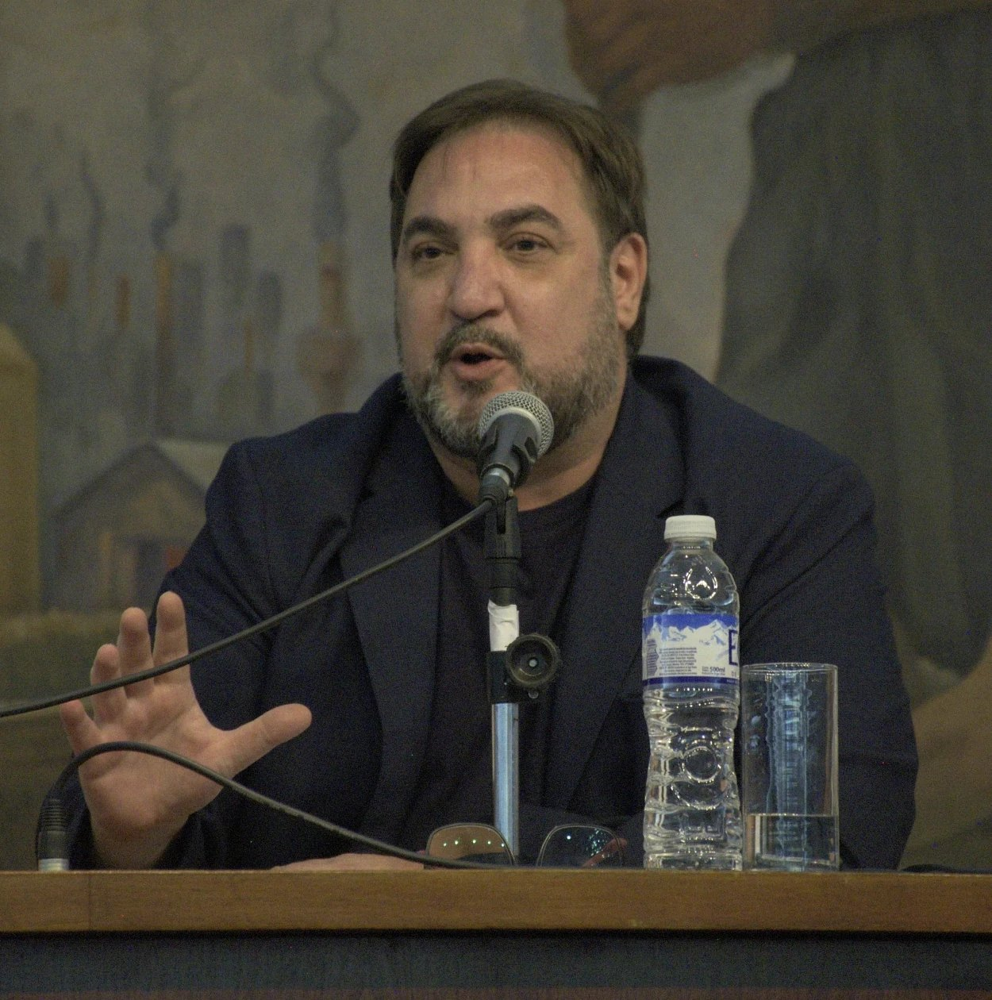
Tenemos el desafío de construir una comunidad informática cada vez más organizada, capaz de ser protagonista de las transformaciones de nuestra actividad.”
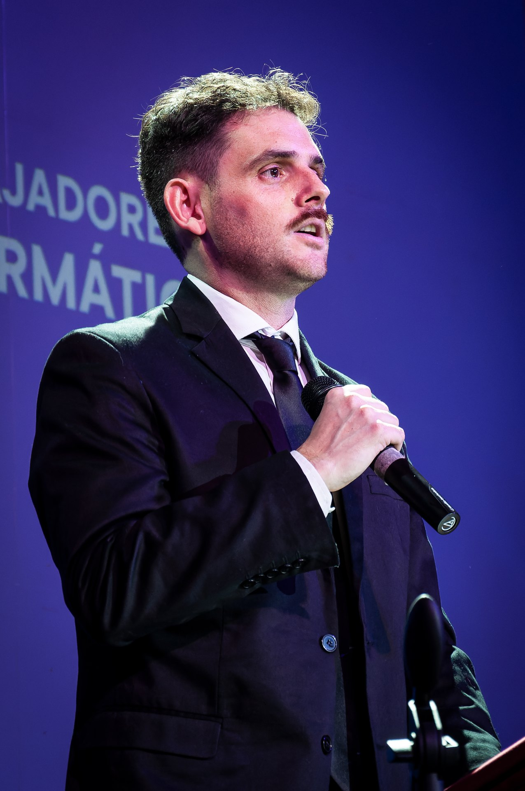
Así como la tecnología transforma la manera en que trabajamos, también tenemos que transformar cómo nos organizamos. El desarrollo tecnológico tiene que estar al servicio de las personas.”
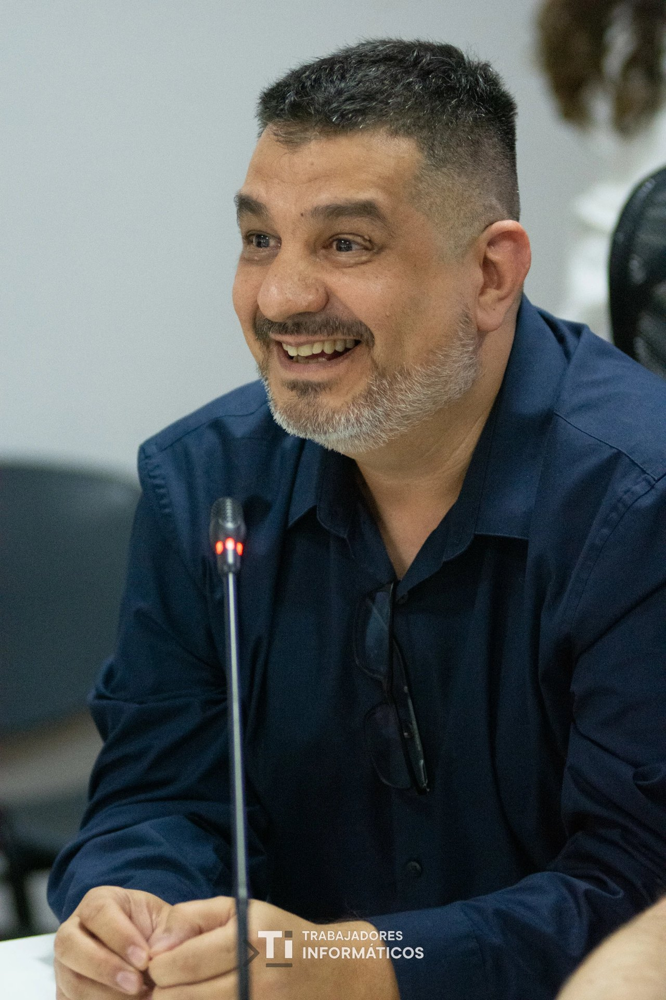
En una actividad en permanente transformación, el acceso a la formación profesional continua debe ser un derecho de todos los trabajadores informáticos.”

Conocer la realidad de los trabajadores informáticos es el punto de partida para transformarla.”
Conocer la realidad de los trabajadores informáticos es el punto de partida para transformarla. Necesitamos información rigurosa que permita construir mejores condiciones laborales.”

No podemos discutir el futuro de la inteligencia artificial sin incorporar la perspectiva de los trabajadores que la desarrollan, la entrenan y la hacen posible.”

Argentina tiene el conocimiento y las capacidades profesionales para ser protagonista del desarrollo tecnológico. El desafío es articular ese potencial en una estrategia de desarrollo nacional.”
La ciberseguridad no es solamente un desafío técnico, es una cuestión estratégica. Proteger nuestros sistemas, datos e infraestructura es también proteger nuestra capacidad de decidir como país.”
Los informáticos somosprotagonistas de unatransformación tecnológicasin precedentes.
28 NOV 2026 · CERO + INFINITO · FCEyN, UBAPero el futurono está escrito.
28 NOV 2026 · CERO + INFINITO · FCEyN, UBA28 NOV 2026 · CERO + INFINITO · FCEyN, UBAQue el desarrollo tecnológicoargentino esté al serviciodel trabajo, la justicia socialy el desarrollo nacional.
28 NOV 2026 · CERO + INFINITO · FCEyN, UBA
Una agendacomún
para el desarrollo tecnológico nacional.
28 NOV 2026 · CERO + INFINITO · FCEyN, UBA
En comunidadsomos másfuertes
En comunidadsomos másfuertes
Conectadospara generarimpacto
Conectadospara generarimpacto
Debemos comenzara pensar en
grandeDebemos comenzara pensar en
grandeUna agenda comúnpara el desarrollotecnológico nacional
Una agenda comúnpara el desarrollotecnológico nacional
Quiénes loconstruyen
Quiénes lo construyen
Unaagendacomún
Una agenda común
El futuro noestá escrito.
Lo escribimosen comunidad.
El futuro noestá escrito.
Lo escribimosen comunidad.
Seguimosconectados
foco.informaticos.arSeguimosconectados
foco.informaticos.arGracias
por construiresto juntos
Gracias
por construiresto juntos
Foro de laComunidad InformáticaConectados para generar impacto
Foro de laComunidad InformáticaConectados para generar impacto
Sindicato informático
Sindicatoinformático
INFORMÁTICO
INFORMÁTICO
INFORMÁTICO
INFORMÁTICO
INFORMÁTICO
INFORMÁTICO
INFORMÁTICO
INFORMÁTICO
INFORMÁTICO
INFORMÁTICO
INFORMÁTICO
INFORMÁTICO
INFORMÁTICO
INFORMÁTICO
INFORMÁTICO
INFORMÁTICO
INFORMÁTICO
INFORMÁTICO
INFORMÁTICO
INFORMÁTICO
INFORMÁTICO
INFORMÁTICO
INFORMÁTICO
INFORMÁTICO
INFORMÁTICO
INFORMÁTICO
INFORMÁTICO
INFORMÁTICO
INFORMÁTICO
INFORMÁTICO

de Computación
Informática
Informáticos
de Computación
INFORMÁTICOS